Approfondisci
«Quando il gusto diventa poesia… il piacere raddoppia»
Bar · Pasticceria · Pasta Fresca · Enoteca — Campi Bisenzio, dal 1982
Marco Pasquini e Claudio Pecchioli iniziano la loro avventura a Calenzano, da pionieri della caffetteria nei sobborghi di Firenze. In anni in cui il bar era solo un punto di ritrovo, loro vogliono portare il bello, il gusto e il benessere — pranzi veloci per i lavoratori, attenzione all'estetica, qualità senza compromessi.
La svolta: apre il primo locale TuttoBene nella zona industriale di Campi Bisenzio. Un grande bar-pasticceria-bistrò con produzione propria — dalle paste della colazione ai lievitati, dalla gastronomia al laboratorio di pasta fresca — in un ambiente dallo stile industriale ma di gusto.
Tuttobene entra nella guida Bar d'Italia del Gambero Rosso tra i migliori bar del Paese. Dieci anni dopo arriva anche l'ambita stella, e negli anni le tre tazzine e i tre chicchi: il massimo riconoscimento. «Obiettivo raggiunto grazie anche ai nostri collaboratori», dice Marco.
Il gruppo conta sei locali nell'hinterland fiorentino, ognuno autogestito ma legato dal marchio TB e dalla stessa filosofia. L'ultimo capitolo: aiutare le storiche collaboratrici ad aprire un locale tutto loro, il Bar Quotidiano, verso Prato.
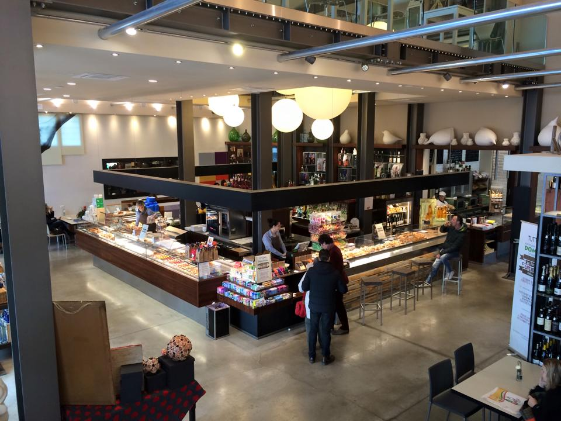
TB è un modo di essere che si trasforma in pensare, creare e cucinare al meglio ciò che ci sta più a cuore: la bontà. I nostri ingredienti? Mente, cuore e buongusto.
— La filosofia TuttobeneTre Tazzine e Tre Chicchi: il massimo della guida Bar d'Italia — la "stella Michelin" dei bar. E la doppia stella ★★, riservata a chi resta al vertice per oltre vent'anni consecutivi.
Leggi l'articolo →Migliore pasticceria di Firenze e dintorni: 49 punti dai maestri pasticceri, conquistando il cappello d'oro grazie a cura del dettaglio e sapori bilanciati.
Leggi l'articolo →Menzione speciale della giuria al premio "Bar dell'anno" 2013, «per la giusta mediazione tra alta qualità e grandi numeri».
Leggi l'articolo →Citato tra «i 15 locali dove bere il caffè migliore di sempre»: lievitati, cremini, scendiletto e altre delizie.
Corriere Cook →Segnalato dalla prestigiosa guida internazionale Falstaff tra le pasticcerie e i caffè da non perdere.
Vedi la scheda →Oltre 3.400 recensioni su Google e quasi 500 su Tripadvisor: «top di gamma», «pasticceria da urlo». Travellers' Choice e n. 1 delle caffetterie di Campi Bisenzio.
Leggi le recensioni →Dal 1982 con Claudio, anima del gruppo TB. «Affidandoci ai nostri collaboratori siamo cresciuti e abbiamo aperto nuovi locali che riflettono la nostra ricerca del bello, del gusto e del benessere.»
Quarant'anni di mestiere e una certezza: «L'unico obiettivo è venire incontro alle esigenze delle persone». Custode delle tradizioni, dal panettone alla pasticceria classica.
Volti di casa al banco e in sala: professionalità, memoria del locale e quel sorriso che fa sentire ogni cliente come a casa propria, ogni giorno dalle prime luci dell'alba.
Dopo dieci anni dietro il banco di Tuttobene, con il sostegno di Marco e Claudio hanno aperto il Bar Quotidiano: la dimostrazione che qui i talenti crescono e diventano famiglia.
Ogni pietanza è cucinata sul posto da cuochi e pasticceri: una squadra giovane ed efficiente che arricchisce il lavoro, giorno per giorno, di stimoli e dettagli preziosi.


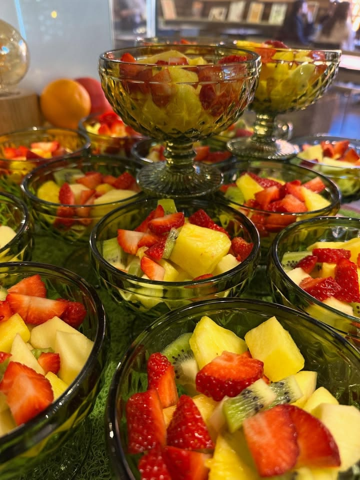
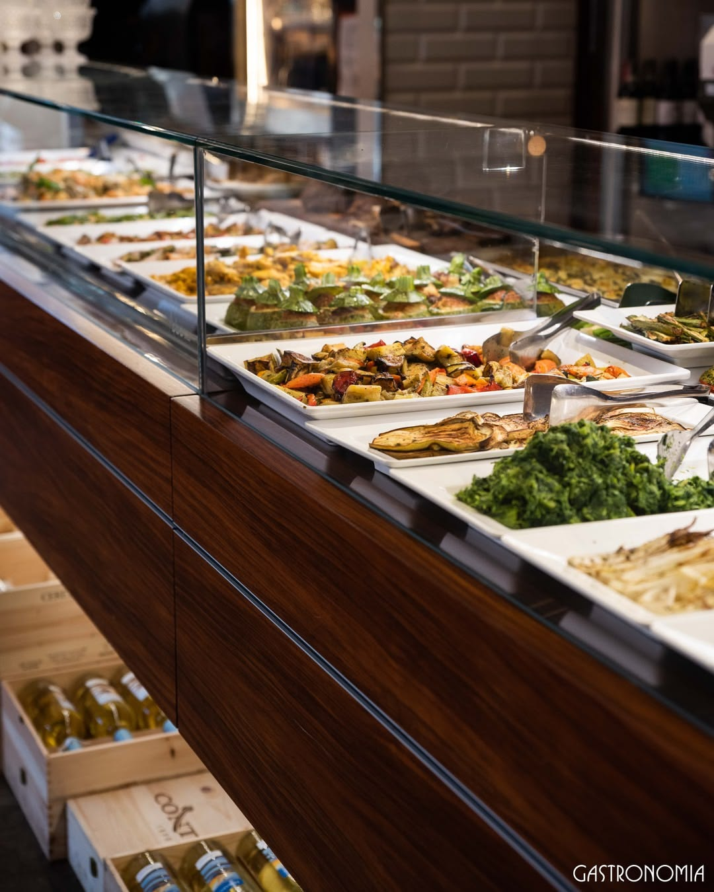


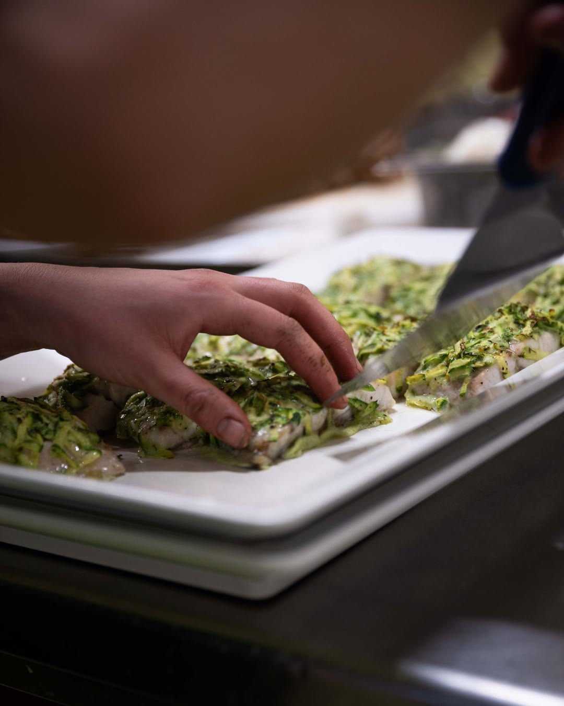
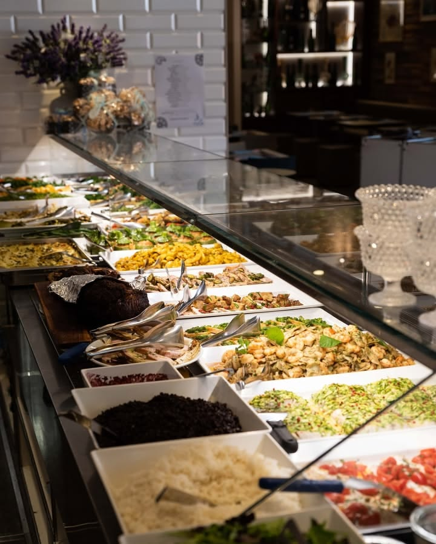

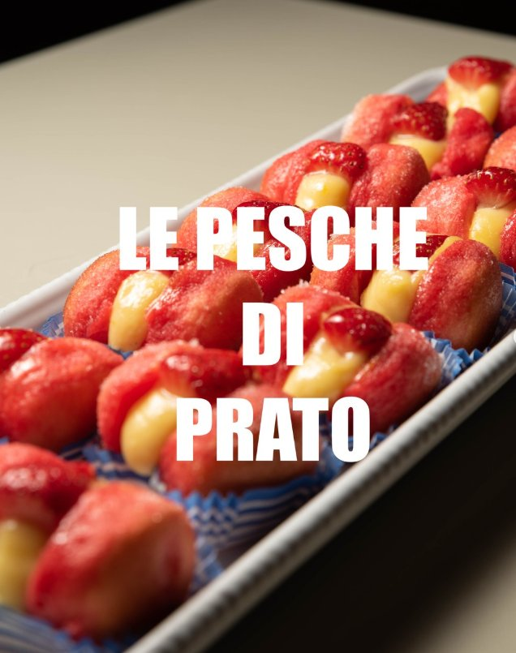

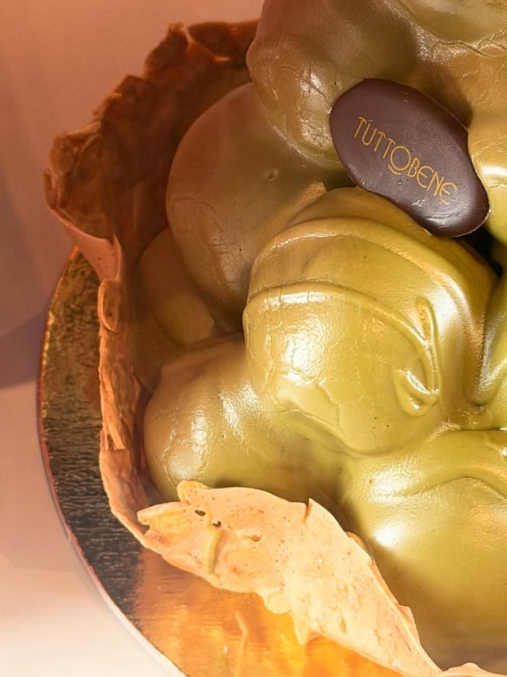
Miscela selezionata, latte montato a crema fine e lucida, servito alla temperatura giusta. Il rito della colazione italiana, eseguito con la cura che il Corriere ha definito tra le migliori di sempre.
Una ventina di lievitati ogni mattina: brioche, focacce, cremini, scendiletto, sfoglie alla crema. Tutto di produzione propria, dal laboratorio direttamente alla vetrina.
Piatti toscani cucinati sul posto, punto pranzo frequentatissimo, enoteca da veri intenditori e uno shop di prodotti ricercati per portare il Tuttobene a casa.
Dall'ape al buffet, dal catering al delivery: gli ampi spazi dal design industriale-chic si prestano a compleanni, incontri di lavoro e ricorrenze. Su terrazza o in sala.

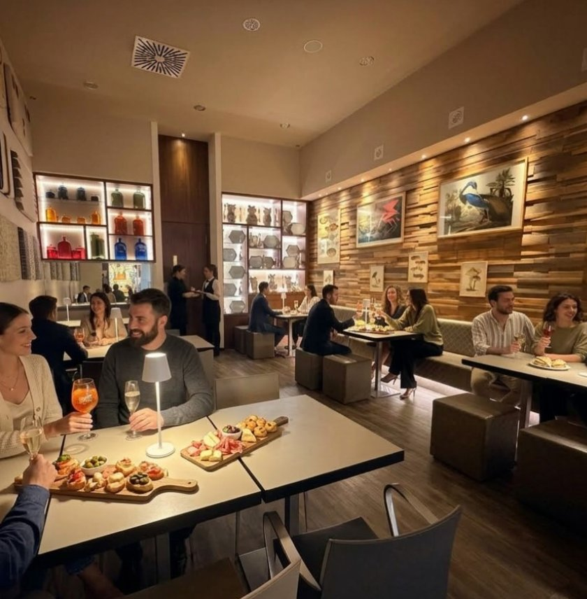

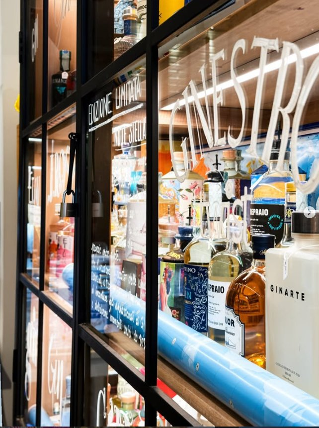
Il banco, le paste, l'atmosfera: i video raccontati direttamente dal profilo Instagram del Tuttobene. Tocca un video per aprirlo su Instagram.
Sei locali nell'hinterland fiorentino, ognuno autogestito ma legato dallo stesso spirito: «Preferiamo che la singola struttura abbia la propria autonomia, pur riportando il marchio TuttoBene».
Via San Quirico 233/A, zona industriale di Campi Bisenzio. Bar, pasticceria, punto pranzo, laboratorio di pasta fresca, enoteca e shop.
Campi BisenzioAperto dalle storiche collaboratrici con la partecipazione di Marco e Claudio, nel Macrolotto verso Prato. Stessa impronta TB: pasticceria, pasta fresca, colazioni e aperitivi.
Macrolotto · PratoIn via Udine a Prato, parte del gruppo Tuttobene: un omaggio alla vecchia Prato tessile, tra vetro retato e pancali dei lanifici.
PratoLe radici del gruppo: dal Bar Tucano del 1982 al Barsport, la zona dove Marco e Claudio hanno imparato il mestiere e formato generazioni di baristi.
CalenzanoIl Tuttobene viene da voi: matrimoni, eventi aziendali, feste in giardino. Taglieri preparati al momento, panini gourmet farciti davanti agli ospiti, postazioni champagne e allestimenti curati in ogni dettaglio — fiori freschi compresi.
Prenota il tuo evento
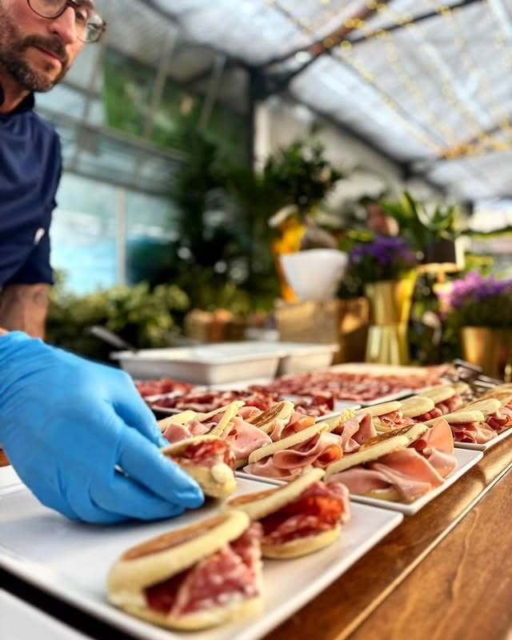
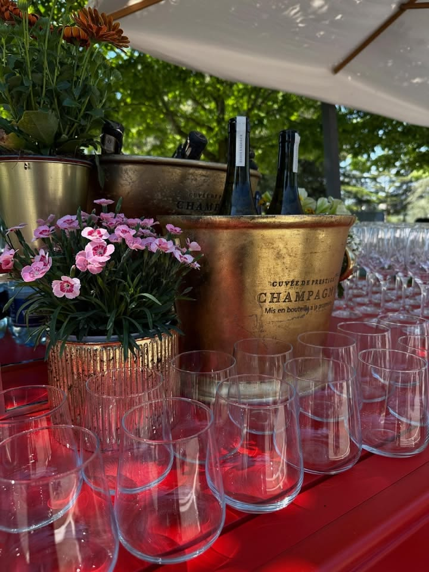

Una festa di compleanno, un incontro di lavoro, un buffet o un aperitivo privato: gli spazi del Tuttobene — sala, terrazza panoramica e angolo enoteca — sono a vostra disposizione.
Catering fuori sede o evento al locale: una telefonata e organizziamo tutto insieme.